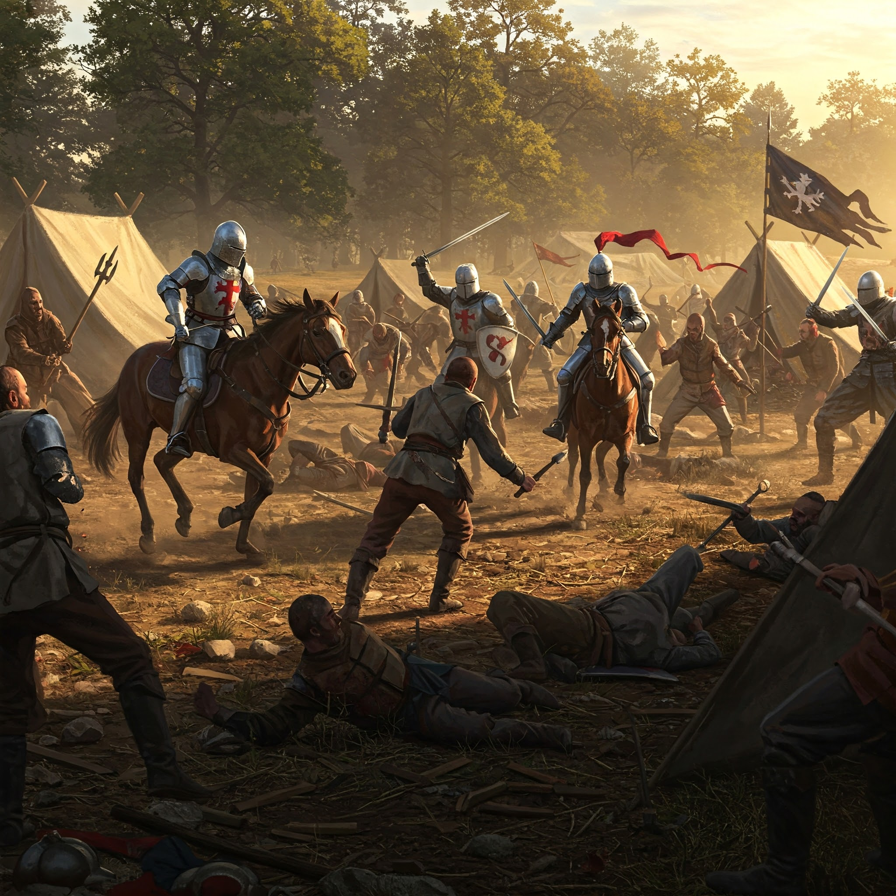
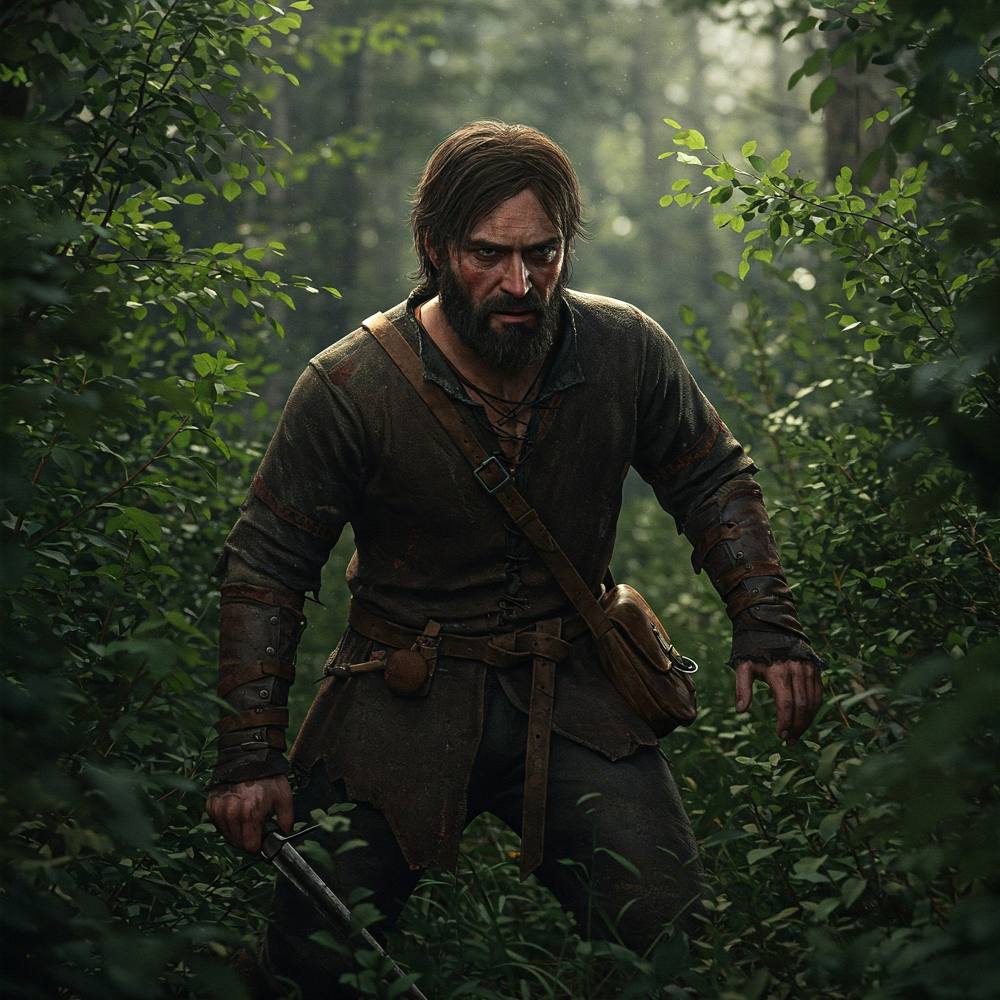
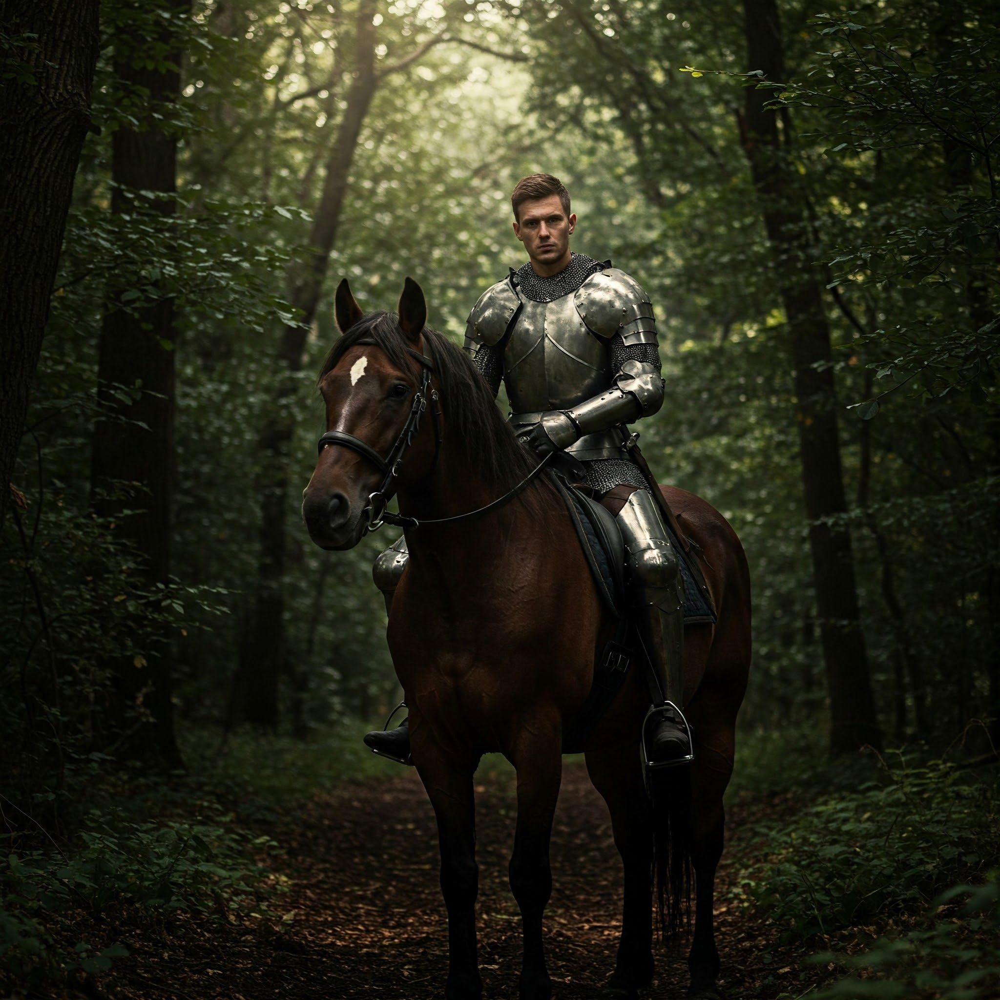
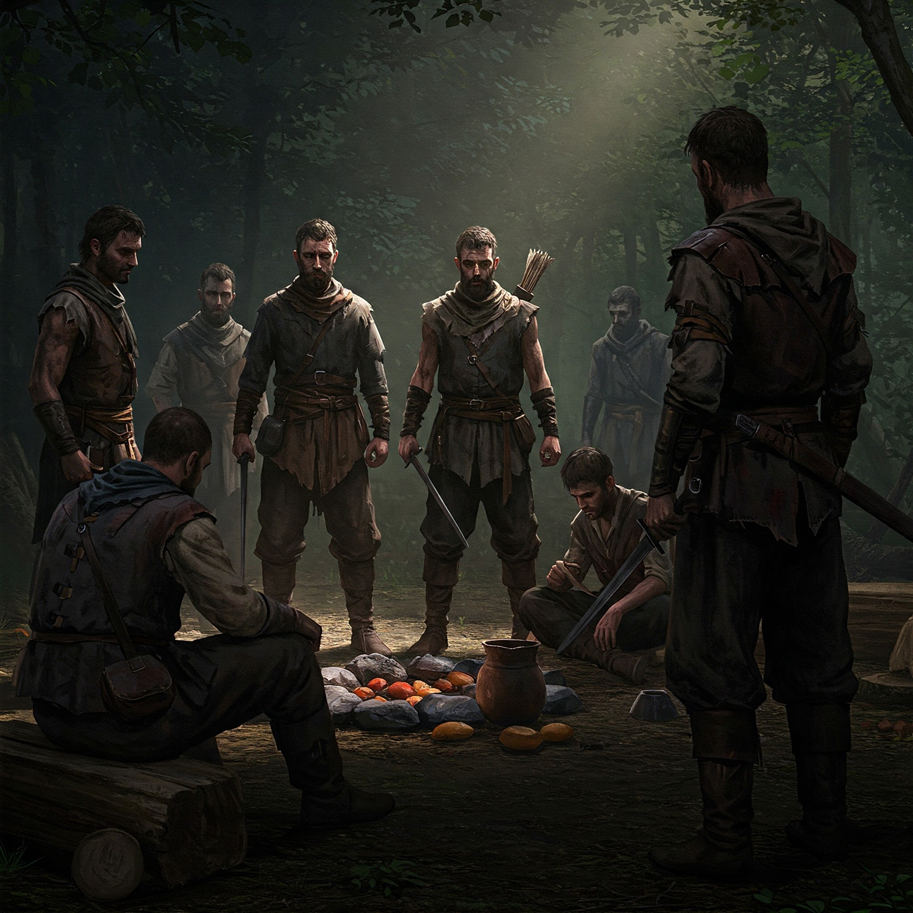
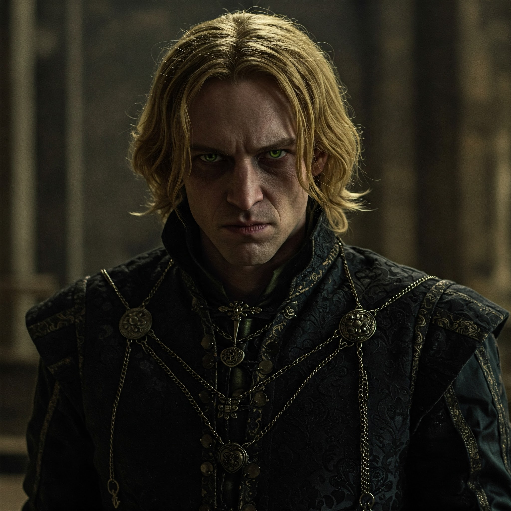
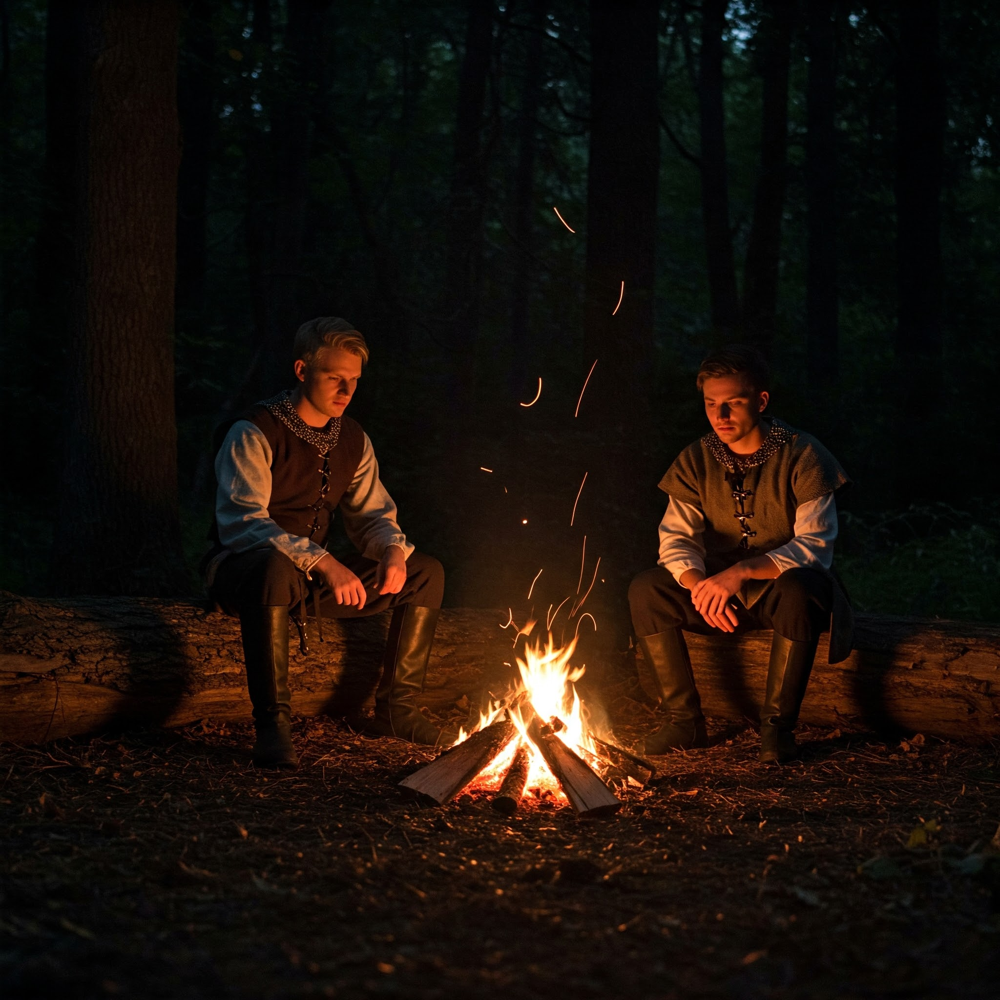

Лагерът в дълбоките гори е изоставен и обрасъл с гъста растителност. Огньовете хвърлят неясни сенки върху лицата на мъжете, а въздухът е наситен със странна напрегнатост — мирисът на свежа кръв от предишните сблъсъци още не е напуснал земята. Земята е мокра и кална от дъжд, а вятърът свисти през дърветата, като че ли шепне предупреждения за нещо, което предстои. Всичко в лагера е необичайно тихо и обляно в зловеща тишина. Но нещо в поведението на наемниците започва да кара Дариан да усеща несигурност. Погледите на някои от тях са странни, студени, дори враждебни. Няколко от хората му се събират настрани, шепнейки помежду си с недоволни изражения. Дариан ги наблюдава внимателно, повдигайки вежда, но не може да си позволи да разкрие слабост. Чувството, че нещо не е наред, го преследва като призрак. Тогава, сред мракa, един от наемниците — Гарен, с яки плещи и студени сини очи, пристъпва към него. Лицето му е твърдо, но в погледа му има нещо, което кара Дариан да се почувства напрегнат и не на място. Силен и решителен, Гарен спира пред него и с дрезгав глас, почти без емоция, произнася думите, които ще разбият последните надежди на Дариан: „Принце… Не можем да продължим с това. Кралят скоро ще накара лордовете от север да ни погнат. Това е загубена кауза. А и ти вече не си ни нужен.“ Дариан го поглежда, напълно извън себе си от гняв и с нарастващо усещане за предателство. Очите му се разширяват от изненада, след което отговори с презрителен, почти ироничен тон: „Какво говориш? Нали знаеш кой съм аз?!“ Той се смее със студен и ироничен поглед, но вътре в себе си усеща как се охлажда. Студенината на предателството започва да го обвива като тежък, неосезаем товар. Гарен не казва повече нищо. Вместо това, той прави знак на останалите наемници да се приближат. Те започват да се събират около Дариан, лицата им стават все по-студени и безмилостни, като предвестие на неизбежния край. „Съжалявам, принце, но това е краят,“ — добавя Гарен с неустрашим, но необяснимо нежен тон. В този момент от дълбоката тишина на лагера, изведнъж се чува звукът на бързи стъпки. Стъпки на войници, които нахлуват в лагера. Дариан, макар и зашеметен и в шок от случващото се, усеща мигновено, че тези стъпки не принадлежат на неговите наемници. Изведнъж, като тъмна сянка, от мрака на лагера излиза Ерик, водейки група от лоялни войници. Те нахлуват уверено, като добре подготвени, решителни бойци. Ерик е начело, като лидер, който не губи време и бързо разпилява редиците на наемниците. „Няма да те оставя, Дариан,“ — казва Ерик с глас, който не носи и капка колебание. Дариан се обръща, очите му пламтят от гняв и разочарование. Не може да повярва на очите си. Това е същият брат, който го е лишил от наследството му, а сега идва да го спаси? Защо? С каква цел? „Ти?! Отново ли се правиш на спасител?! Какво искаш? Не ти ли стига всичко това?!“ — гневът му излиза като пламък, но дълбоко в него се крие объркване и болка. Ерик не отговаря на провокацията. Вместо това, той се хвърля в бой с меча си, отрязвайки път за Дариан. Рамото му блести със студена решителност, докато с остри удари разпуска нападателите, които го заобикалят. Дариан стои неподвижен, шокиран, не в състояние да разбере какво се случва. Чувството за предателство от страна на наемниците, смесено с външния жест на спасение от брат му, го оставя объркан. Но, въпреки всичко, някъде дълбоко в сърцето си, Дариан усеща едно нещо ясно — дори и да го презира, Ерик е единственият, който все още е готов да го спаси от разрухата, в която се намира. Лагерът беше тих, а единствените звуци, които нарушаваха нощната тишина, бяха шепнещото пукотене на дървата в огъня и тихото мърморене на вятъра, който преминаваше през дърветата. Дариан седеше на колене, изгубен в размисъл, като погледът му бе фиксиран върху огнените пламъци, които се люлееха и хвърляха играещи сенки върху лицето му. Умореното му лице беше потъмняло, очите му замъглени от умора и мисли, които не се изясняваха. Той не забеляза веднага стъпките, които приближаваха към него, но усещаше присъствието на брат си, Ерик. Когато Ерик спря на няколко крачки от него, Дариан не вдигна поглед. Мълчанието помежду им беше натежало, като тежък товар, който Дарианне искаше да премести. Ерик направи крачка напред и, макар и със спокойствие, се чу как той казва: „ Дариан, трябва да говорим.“ Нямаше отговор от страна на Дариан. Той просто продължи да гледа огъня, сякаш всяка искра в пламъците му напомняше за нещо, което искаше да забрави. След пауза, изпълнена с тежки мисли, Дариан най-накрая изрече: „Това не беше част от плана, нали? Както винаги, ти се появяваш, за да ми напомниш, че съм се провалил.“ Сарказмът му бе ясен, но сега не звучеше така остро както преди. Ерик го усети, но не отговори на същия тон. Вместо това, той стоеше пред брат си, поглеждайки го с поглед, в който се събираше и разочарование, и грижа. „Не е въпросът в провала, Дариан. Въпросът е, че нямаш никакъв план за себе си. Слагаш всички в опасност, включително и себе си.“ Дариан, без да се обръща към него, чу думите на Ерик. Но след малко той накрая погледна брат си с пронизващ, но пълен с тъга поглед. Очите му, обикновено изпълнени с гордост и агресия, сега имаха нещо ново — нещо, което почти не бе показвал на никого отдавна. „Ти си сигурен, че ми говориш за планове, Ерик? Че ще ми кажеш какво е правилно, след всичко, което ми се случи?“ Гласът му беше тих, но същевременно пропит с болка, сякаш всеки звук му беше излязъл с усилие. Ерик се изправи пред него, без да поклати глава. Той знаеше, че думите му няма да излекуват Дариан, но не спираше да се опитва. „Не съм тук, за да ти казвам какво е правилно. Но аз съм тук, защото ти все още си моят брат, Дариан. И не искам да виждам как се самоубиваш по този начин.“ Дариан, засмян със зла усмивка, пак насочи погледа си към огъня, но дори той не можеше да избегне тежестта на думите на брат си. Въздухът между тях беше пропит със съжаление, което не можеха да изразят със своите жестове. Ерик продължи, с все по-тих и съпричастен тон: „Не съм ти казвал, че е лесно. Но има различен начин да се справиш с болката. И аз знам какво е да не ти обръщат внимание. Но затова се сражаваш, за да станеш нещо по-добро, не за да се превърнеш в нещо, което дори не признаваш.“ Дариан не отговори веднага. Вместо това, той сведе поглед към земята, сякаш наистина за първи път се замисляше за думите на брат си. Но не успя да намери отговор, който да изразява цялата му болка. Ерик се приближи още малко, а паузата между тях беше като мост, който те двамата трябваше да преминат, без да знаят как. Без да каза много, Ерик постави ръка върху рамото на Дариан, в знак на съпричастност, но и решителност. „Няма да те оставя да се разрушаваш, дори ако не искаш помощта ми. И дори ако се опиташ да се откажеш, ще бъда тук.“ Дариан го погледна с очи, които вече не криеха всичката тежест, която носеше в себе си. За първи път в този разговор имаше нещо, което не беше сарказъм или гордост — имаше съмнение, имаше болка, и, може би, малко надежда. „Не исках да става така… Просто... не знаех какво да правя.“ Ерик затвори за миг очи, поемайки въздух, и после с почти несъществуващ усмивка отговори: „Не искам да бъдеш по-добър заради мен. Искам да бъдеш по-добър заради себе си.“ Тишината между тях беше тежка, но вече не бе толкова натоварена със стена от недоволство и омраза. Дариан седеше неподвижно, като че ли в момента започваше да разбира, че не всичко в живота му беше за загуба. Ерик остана с него още малко, но никой от тях не каза нищо повече. Дариан пое дълбоко въздух и изрече в мислите си, за първи път истинското значение на извинението, без да го произнесе с думи. Той вече знаеше — брат му не беше тук, за да му наложи наказание или да го критикува, а за да му помогне да намери пътя обратно към себе си.

Ерик и неговите съюзници разбиват лагерът на Дариан

Гарен

Ерик

Група наемници

Принц Дариан

Ерик и Дариан си говорят след битката